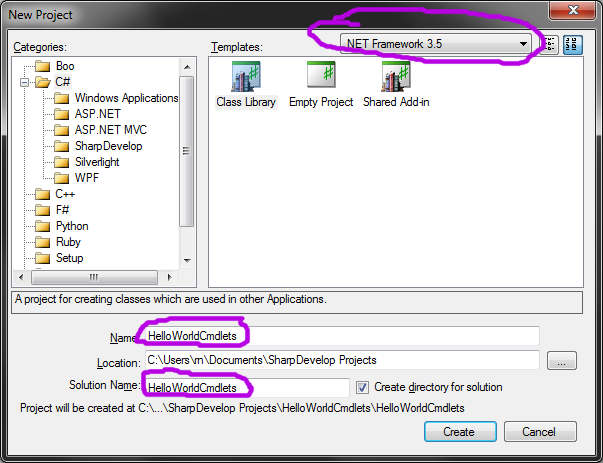
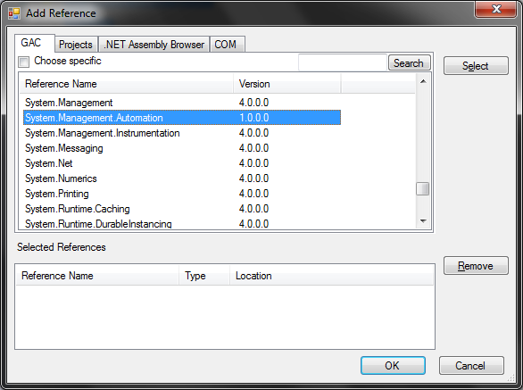
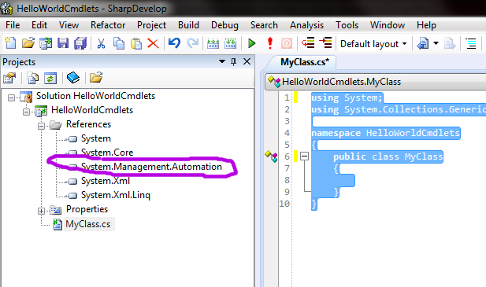
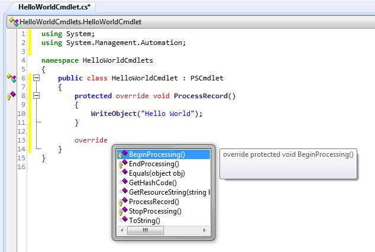
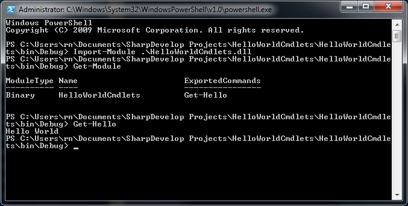

Prečo cmdlety?
Skriptovacie možnosti PowerShellu sú dostatočne silné na to, aby bolo možné v jeho skriptovacom jazyku napísať takmer akúkoľvek činnosť. Existuje mnoho prípadov, keď namiesto komplikovaných skriptov chceme využiť svoje znalosti C# alebo iného programovacieho jazyka na platforme .NET a vyvinúť si vlastný cmdlet, ktorý realizuje jednu konkrétnu špecifickú úlohu. Náš kód sa v niektorých situáciách zjednoduší a sprehľadní.
V tomto tutoriále si ukážeme, ako možno vytvoriť vlastný jednoduchý cmdlet typu “Ahoj svet”. Nebudeme však používať komplexné prostredie Visual Studia.NET, ale využijeme bezplatné alternatívne prostredie SharpDevelop, ktoré úplne postačí na riešenie tejto úlohy.
SharpDevelop
SharpDevelop je prostredie na vývoj aplikácií v .NET. Nie je také mocné, ani neponúka toľko predpripravených šablón a nástrojov ako Visual Studio.NET, ale zato je bezplatné a nie sú s ním spojené žiadne špecifické obmedzenia. K októbru 2011 vyšla verzia 4.1 dostupná z produktových stránok.
Pred inštaláciou sa uistíme, že máme vo Windowse nainštalovaný .NET Framework verzie 3.5 SP1 (dostupné z webu Microsoftu) a zároveň .NET verzie 4.0 (opäť dostupné z webu Microsoftu). Inštalátor totiž kontroluje verzie až po voľbe súčastí, ktoré majú byť nainštalované, čo môže byť pomerne otravné.
Note
Na rozdiel od sveta Javy v .NET Frameworku nie vždy platí, že inštalácia novšej verzie v sebe automaticky nesie aj moduly staršej verzie. .NET Framework podporuje nezávislé moduly a aplikácia si môže vyžiadať použitie knižnice, či modulu (v terminológii .NET assembly) konkrétnej verzie.
Po spustení SharpDevelopera vytvoríme nový solution.
Note
Solution v .NET terminológii zodpovedá skupine projektov, ktoré dohromady vyprodukujú spustiteľnú aplikáciu. V samotnej Jave neexistuje analógia tohto konceptu – jeho realizácia obvykle záleží na použitom IDE.
Z ponuky zvolíme solution v jazyku C# a použijeme možnosť Class Library. Samotný skompilovaný cmdlet totiž naozaj nie je nič iné než bežná knižnica (DLL).

Solution nazvime inteligentným spôsobom, napr. HelloWorldCmdlets a
vyberme z rozbaľovacieho menu profil .NET Framework 3.0.
Warning
Voľba staršej verzie je veľmi podstatná! SharpDevelop nám implicitne ponúkne verziu .NET 4.0, s ktorou PowerShell 2 nie je kompatibilný. Ranou istoty je použiť .NET 3.0, či 3.5 alebo ešte starší.
SharpDevelop automaticky vytvorí prvú triedu v mennom priestore HelloWorldCmdlets, ktorá po odstránení komentárov vyzerá nasledovne:
using System;
using System.Collections.Generic;
namespace HelloWorldCmdlets
{
public class MyClass
{
}
}
Samotný cmdlet vytvoríme v nasledovnom kroku:
Zavedenie assemblies
Samotná tvorba cmdletov sa nijak mimoriadne nelíši od tvorby akejkoľvej
inej DLL knižnice. Podobne za cmdletom netreba hľadať žiadnu mágiu:
cmdlet je trieda, ktorá dedí od rodičovskej triedy
System.Management.Automation.PSCmdlet a prekrýva jej metódy. Na to,
aby sme vedeli použiť túto rodičovskú triedu v našom projekte, musíme
doň zaviesť referenciu na assembly, ktorá ju obsahuje.
Note
V Jave je obvyklé stiahnuť JAR s knižnicou, a vložiť ho do CLASSPATH, čím budeme mať k dispozícii všetky jej triedy. Keďže .NET podporuje verzionované knižnice, musíme zaviesť referenciu (odkaz) na konkrétnu knižnicu v danej verzii - inými slovami, zaviesť referenciu na konkrétne assembly.
Z menu Project vyberme Add Reference a pridajme referenciu na uvedenú assembly:

Pridanie assembly vieme overiť v strome projektu, v uzle References.

Tvorba cmdletu
Tvorba prázdneho cmdletu
Teraz, keď sme zaviedli všetky požadované assemblies, môžeme
dopracovať náš cmdlet. Odstráňme z projektu súbor MyClass.cs a
namiesto neho vytvorme nový súbor pre triedu (File | New… | File…. |
C# File a potvrdíme snahu vytvoriť súbor v projekte.) Súbor nazveme
HelloWorldCmdlet a vložíme doňho nasledovný obsah:
using System;
using System.Management.Automation;
namespace HelloWorldCmdlets
{
[Cmdlet(VerbsCommon.Get, "Hello")]
public class HelloWorldCmdlet : PSCmdlet
{
}
}
Trieda dedí od rodičovskej triedy
System.Management.Automation.PSCmdlet. To však nie je všetko - cmdlet
musí byť označený atribútom CmdletAttribute, ktorý špecifikuje názov
cmdletu, pod ktorým sa sprístupní v prostredí PowerShellu.
Konvencia káže, aby každý cmdlet mal názov pozostávajúci zo slovesa a podstatného mena a nie je dôvod ju nedodržať. Náš cmdlet sa sprístupní pod menom Get-Hello.
Note
Všimnime si niekoľko syntaktických rozdielov oproti Jave.
Namiesto deklarácie import používame na ten istý účel deklaráciu using.
V C# sa môže v rámci jedného súboru nachádzať i viacero tried poskytnutých v rámci bloku namespace, ktorý je ekvivalentom balíčka (package) v Jave.
Dedičnosť tried nezapisujeme kľúčovým slovom extends, ale prostou dvojbodkou.
Atribúty sú .NETovským protipólom anotácií v Jave. Namiesto zavináčovej notácie ich uvádzame do hranatých zátvoriek.
Note
Atribút CmdletAttribute potrebuje dva reťazce: sloveso a podstatné meno. Názov slovesa prevezmeme zo statickej inštančnej premennej triedy
VerbsCommon, ktorá môže slúžiť ako vzor typicky používaných slovies.
Prekrytie metódy
Na to, aby cmdlet robil niečo zmysluplné, je potrebné prekryť niektorú z
metód rodičovskej triedy. Základnou metódou je ProcessRecord(), ktorá sa
zavolá jedenkrát pre každý objekt, ktorý príde z rúry do cmdletu. Ak z
rúry prichádza napr. 5 objektov, metóda sa zavolá päťkrát.
Dodajme túto metódu do cmdletu a dosiahnime tým najjednoduchšiu možnú
funkcionalitu: tzv. “Hello World”. Cmdlet nech do rúry pošle jeden
pozdravný reťazec. Na zápis objektu do rúry použijeme rodičovskú metódu
WriteObject().
using System;
using System.Management.Automation;
namespace HelloWorldCmdlets
{
[Cmdlet(VerbsCommon.Get, "Hello")]
public class HelloWorldCmdlet : PSCmdlet
{
protected override void ProcessRecord()
{
WriteObject("Hello World");
}
}
}
Note
Na rozdiel od Javy treba prekryté metódy explicitne označiť kľúčovým slovom override.
Note
Ak hľadáte analógiu funkcie Override and implement methods z Eclipse, hľadáte v menu márne. Prekryť metódu môžete pomocou funkcie autocomplete iným spôsobom: uveďte do triedy kľúčové slovo override, a po stlačení Ctrl+Enter vám SharpDevelop ponúkne zoznam rodičovských metód určených na prekrytie.

Vytvorenie inštalátora
Na to, aby sme mohli cmdlet použiť v prostredí PowerShellu, potrebujeme obaliť triedu cmdletu do zásuvného modulu, tzv. snap-inu. Jeden snap-in môže obsahovať i viacero cmdletov, či providerov, ktoré možno naraz zaviesť do prostredia.
Snap-in je opäť bežná trieda dediaca od
System.Management.Automation.PSSnapIn, s povinným atribútom
RunInstallerAttribute a povinným poskytnuté nasledovných properties
-
Name: zmysluplný názov snap-inu -
Vendor: poskytovateľ snap-inu, obvykle názov spoločnosti autora. -
Description: používateľsky prítulný popis snap-inu
Snap-in musí mať zároveň povinný atribút RunInstallerAttribute, ktorý
indikuje spustenie inštalátora pri nasadzovaní snap-inu do prostredia.
[RunInstaller(true)]
public class HelloWorldSnapIns : PSSnapIn
{
public override string Name {
get {
return "HelloWorldSnapIns";
}
}
public override string Description {
get {
return "A sample snap-in with Hello World message.";
}
}
public override string Vendor {
get {
return "UINF PF UPJS";
}
}
}
Note
Na rozdiel od Javy v C# nie je tradícia getterov a setterov v podobe metód. Zvyklosťou je pristupovať k inštančným premenným pomocou vlastností (properties), ktoré tvária ako priamo viditeľné verejné inštančné premenné. Ak potrebujeme pristúpiť k premennej pomocou metódy (ako v príklade), použijeme na to syntax get, resp. set, ako vidíme v príklade properties Name, Description a Vendor.
V tejto chvílu už môžeme projekt zostaviť: Build | Build Solution. Pri prvom pokuse získame chybu:
The type 'System.Configuration.Install.Installer' is
defined in an assembly that is not referenced. You must add a reference
to assembly 'System.Configuration.Install, Version=2.0.0.0, Culture=neutral,
PublicKeyToken=b03f5f7f11d50a3a'. (CS0012) -
C:\Users\rn\Documents\SharpDevelop Projects\HelloWorldCmdlets\HelloWorldCmdlets\HelloWorldCmdlet.cs:18,15
Do projektu musíme pridať assembly
System.Configuration.Install.Installer podobne, ako sme to robili v
prvom kroku.
Teraz už zostavenie prebehne bez problémov a v adresári projektu sa
objaví súbor DLL s knižnicou. Na našom stroji sa nachádza v adresári
c:\Users\novotnyr\Documents\SharpDevelop Projects\HelloWorldCmdlets\HelloWorldCmdlets\bin\Debug\HelloWorldCmdlets.dll.
Zavedenie do PowerShellu
Spustíme PowerShell a presunieme sa do adresára s DLL súborom. Pomocou
cmdletu Import-Module zavedieme snap-in do prostredia.
PS C:\Users\novotnyr\Documents\SharpDevelop Projects\HelloWorldCmdlets\HelloWorldCmdlets\bin\Debug> Import-Module .\HelloWorldCmdlets.dll
Warning
Cmdlet
Import-Modulepotrebuje absolútnu alebo relatívnu cestu k DLL súboru. Bodka a lomka na začiatku sa odkazujú na aktuálny adresár. V prípade, že ju vynecháme, bude importovací cmdlet protestovať, že nevie nájsť náš modul.
Warning
Ak získame chybu:
Import-Module : Could not load file or assembly 'file:///C:\Users\novotnyr\Documents\SharpDevelop\Projects\HelloWorldCmdlets\HelloWorldCmdlets\bin\Debug\HelloWorldCmdlets.dll' or one of its dependencies. This assembly is built by a runtime newer than the currently loaded runtime and cannot be loaded. At line:1 char:14 + Import-Module .\HelloWorldCmdlets.dll + CategoryInfo : NotSpecified: (:) [Import-Module], BadImageFormatException + FullyQualifiedErrorId : System.BadImageFormatException,Microsoft.PowerShell.Commands.ImportModuleCommandznamená to, že sme pri vytváraní projektu nastavili príliš novú verziu .NET Frameworku.
Overiť prítomnosť snap-inu v prostredí môžeme cmdletom Get-Module,
ktorý vypíše všetky snap-iny a cmdlety, ktoré dávajú k dispozícii.
V tejto chvíli už nič nebráni priamo spustiť z prostredia náš cmdlet
Get-Hello a obdivovať výpis, ktorý sme zadeklarovali.

Rekompilácia po zmene
Po zmene súboru musíme zatvoriť PowerShell, prebudovať projekt v
SharpDevelope a použitím Install-Module ho opäť zaviesť do prostredia
a otestovať. Najlepší spôsob, akým zrýchliť túto nezáživnú činnosť, je
vytvoriť si vlastný powershellovský skript.
Ďalšie cmdlety
V ukážke máme tri cmdlety v jednom snap-ine:
Say-Hellodemonštrujúci parameter-UserNames validáciou.Get-Translationdemonštrujúci pozičný parameter, ktorý môže nadobúdať aj hodnotu z rúry.Add-Extensionpracuje so súbormi a ukazuje povinný parameter.
using System;
using System.Collections.Generic;
using System.ComponentModel;
using System.IO;
using System.Management.Automation;
namespace HelloCmdlets
{
[Cmdlet("Say", "Hello")]
public class HelloWorldCmdlet : PSCmdlet
{
[Parameter]
[ValidateSet("Steve Jobs", "Bill Gates")]
public string UserName {
get; set;
}
protected override void ProcessRecord()
{
WriteObject(UserName + ", Hello World!");
}
}
[Cmdlet("Get", "Translation")]
public class TranslationCmdlet : PSCmdlet {
[Parameter(Position=0, ValueFromPipeline=true)]
public string Word {
get;
set;
}
private Dictionary<string, string> dictionary = new Dictionary<string, string>();
public TranslationCmdlet() {
dictionary["slovo"] = "word";
dictionary["pes"] = "dog";
dictionary["dom"] = "house";
dictionary["zabijac"] = "slayer";
}
protected override void ProcessRecord()
{
if(dictionary.ContainsKey(Word)) {
WriteObject(dictionary[Word]);
} else {
WriteError(new ErrorRecord(
new KeyNotFoundException(),
"Slovo sa nenaslo",
ErrorCategory.InvalidData,
Word));
}
}
protected override void BeginProcessing()
{
WriteObject("-----------------------------------------");
}
}
[Cmdlet("Add", "Extension")]
public class AddExtensionCmdlet : PSCmdlet {
[Parameter(ValueFromPipeline=true, Position=0)]
public FileInfo File;
[Parameter(Mandatory=true)]
public string Extension;
protected override void ProcessRecord()
{
File.MoveTo(File.FullName + Extension);
}
}
[RunInstaller(true)]
public class HelloWorldSnapIn : PSSnapIn
{
public override string Vendor {
get {
return "UPJS";
}
}
public override string Name {
get {
return "HelloWorldSnapIn";
}
}
public override string Description {
get {
return "Hello World cmdlets.";
}
}
}
}